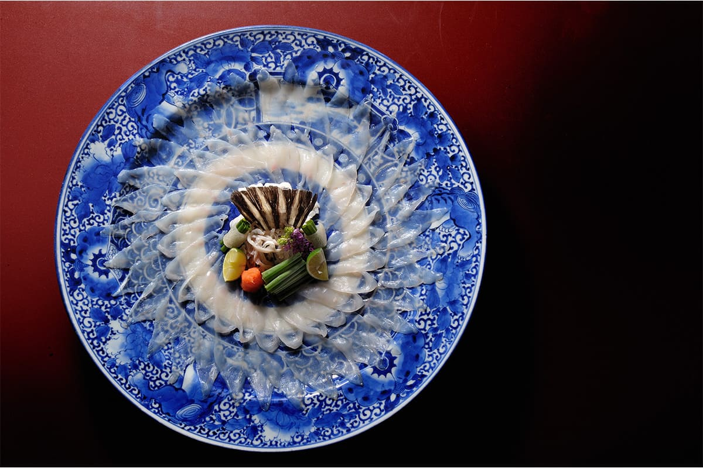
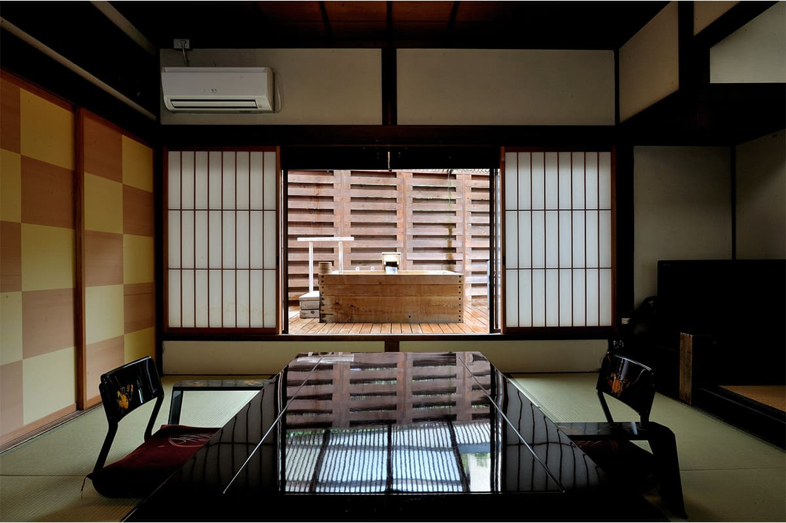
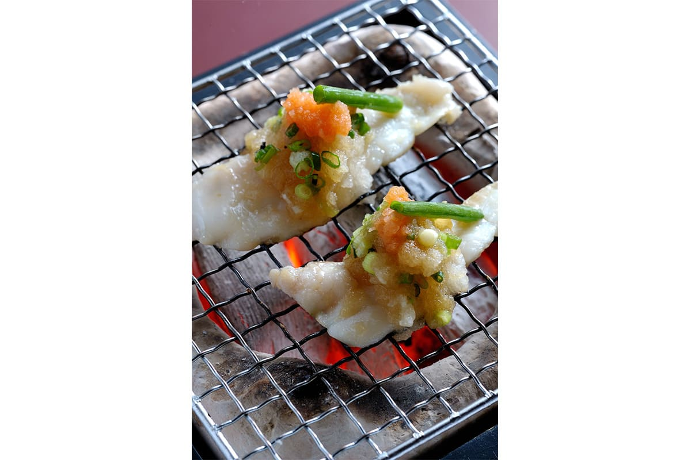
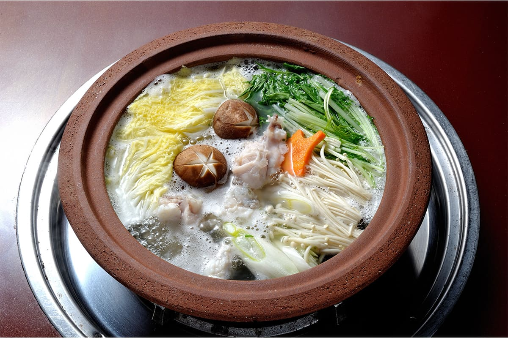
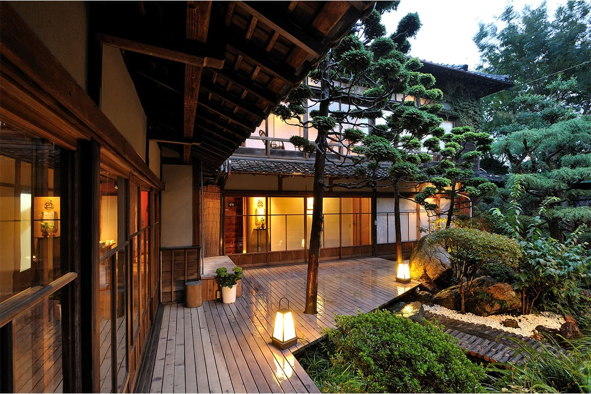
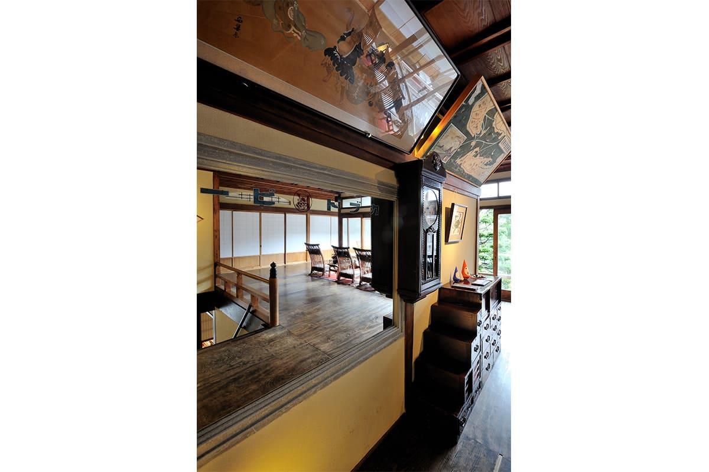
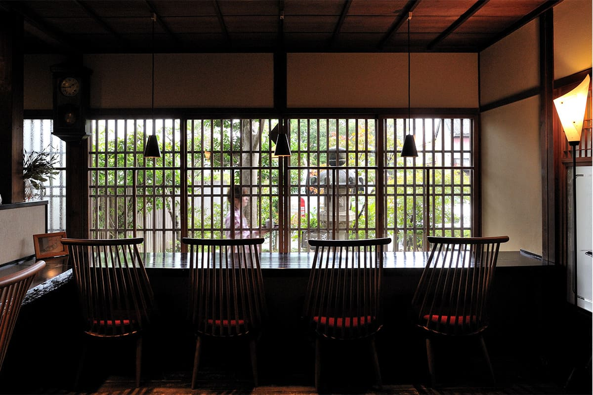
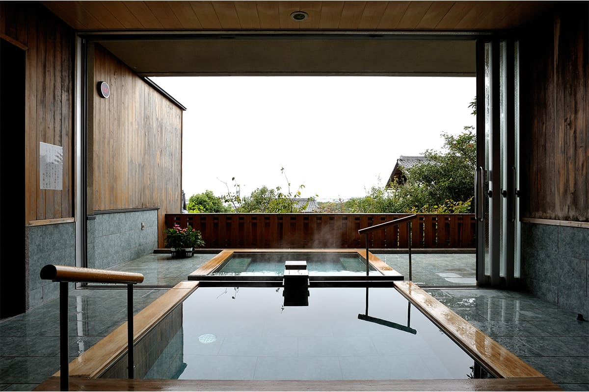

Префектура Айти · полуостров Ацуми, Фукуэ · рёкан и еда
Рёкан Kakujoro на полуострове Ацуми: зимний ужин из дикой фугу

Фукуэ, квартал города Тахара, мало кому знакомо, но рядом мыс Ирако, южная оконечность полуострова Ацуми. В старых улочках этого портового места стоит рёкан Kakujoro, куда зимой едут ради фугу.
Место
Рёкан на краю полуострова
Полуостров Ацуми тянется вдоль залива Микава на юге префектуры Айти, и мыс Ирако на его конце будто стережёт вход в залив Исэ. Когда-то здесь проходил оживлённый морской путь, и Фукуэ жил портом. Почти у самой юго-западной оконечности полуострова, среди старых домов, стоит рёкан «Вами-но ядо Kakujoro». «Вами» значит примерно «вкус гармонии», и название рёкан оправдывает: сюда едут прежде всего поесть.

Природа вокруг щедрая, и вкусное здесь есть в любое время года, но больше всего гостей приезжает зимой, ради фугу. Обычно при слове «фугу» японец вспоминает Симоносэки на западе Хонсю: торги на тамошнем рынке, где цену называют пальцами в мешке, а хриплые выкрики аукционистов давно стали приметой зимы. Но часть фугу, которую продают в Симоносэки, привозят как раз отсюда. В море у Ирако рыба явно находит всё, что ей нужно.
На кухне лежит огромная фугу. Хозяин, который сам стоит у разделочной доски, говорит, что вкус рыбы решают дно, течения и то, какой из-за них вырастает рыба. Бывают экземпляры весом до 8 кг. В столовой с видом на внутренний двор блюда из фугу выносят одно за другим, и невольно прикидываешь, сколько стоил бы такой ужин в Токио. Настолько это щедрая и смелая кухня.
Ужин
Курс из дикой тигровой фугу
Курс открывается кожей фугу, которую на мгновение ошпаривают кипятком. По виду крупной рыбы такой тонкости не ждёшь: к лёгкому вкусу белой рыбы добавляется тягучая насыщенность коллагена.
После сезонных закусок приносят «тэссу», тончайшее сасими из фугу, разложенное на большом блюде так, что сквозь ломтики просвечивает синий узор посуды. Можно брать по одному ломтику, а можно смело захватывать сразу несколько. Мясо упругое, со вкусом, какой бывает только у фугу. Сначала любуешься блюдом, потом улыбаешься с первого куска.

Даже тяванмуси, обязательный в рёкане паровой яичный крем, здесь щедро наполнен фугу. Затем наступает очередь жарки на углях. Во многих ресторанах на решётку кладут куски фугу с костями. Здесь же нарезают мясо чуть толще, заворачивают его в зелёный лук и обжаривают на углях. Когда соус пондзу на рыбе начинает пахнуть жареным, значит, пора есть. Получается тэсса, едва тронутая огнём, по сути татаки из фугу, и пробовать её лучше почти сырой.

Так зимний вечер и проходит: одно блюдо из фугу за другим.
Дом
Старый рёкан эпохи Сёва
Но Kakujoro не только рёкан для любителей фугу. Первое, чем здесь стоит насладиться, это сам дом.
Он стоит в старом квартале, где непонятно откуда тянет морем. В облике здания и в коридорах сохранился дух эпохи Сёва (1926–1989), и это не просто ретро: дом умеет показать красоту полутени. Решётки на окнах, солнечные пятна под деревьями внутреннего двора и тихие часы среди них хорошо передают это настроение. Отдаться медленному течению времени здесь тоже можно считать одним из удовольствий рёкана.

К ностальгическому дому добавляются чёткие современные интерьеры номеров. Есть и бар, спрятанный в отдельном флигеле, и общая баня с хорошим видом.



Рядом нет знаменитых достопримечательностей. Kakujoro стоит в тихом, неброском месте и светится там, как старое потемневшее серебро.
Рёкан Kakujoro
- Адрес
- префектура Айти, Тахара, Фукуэ-тё Симодзи, 38
- Телефон
- +81 531-32-1155
- Номера
- главный корпус 5, флигель «Ундзёро» 2, флигель «Суйдзёро» 3
- Цены / Вход
- главный корпус от 30 240 иен, флигели от 35 640 иен за человека с ужином и завтраком (двое в номере, курс из дикой тигровой фугу); без ночлега обед 14 040 иен, ужин от 16 200 иен
- Заезд / выезд
- 15:00 / 11:00
- Как добраться
- от станции Тоёхаси по линии Ацуми железной дороги Тоёхаси до станции Микава-Тахара 35 минут, оттуда такси или трансфер рёкана около 30 минут; на машине около 90 минут от развязки Тоёкава скоростной дороги Томэй; паром из порта Тоба (префектура Миэ) или катер из портов Моросаки и Кова до порта Ирако, оттуда автобус или трансфер около 15 минут
- Сайт
- kakujoro.com
Фото: Ко Миядзи.